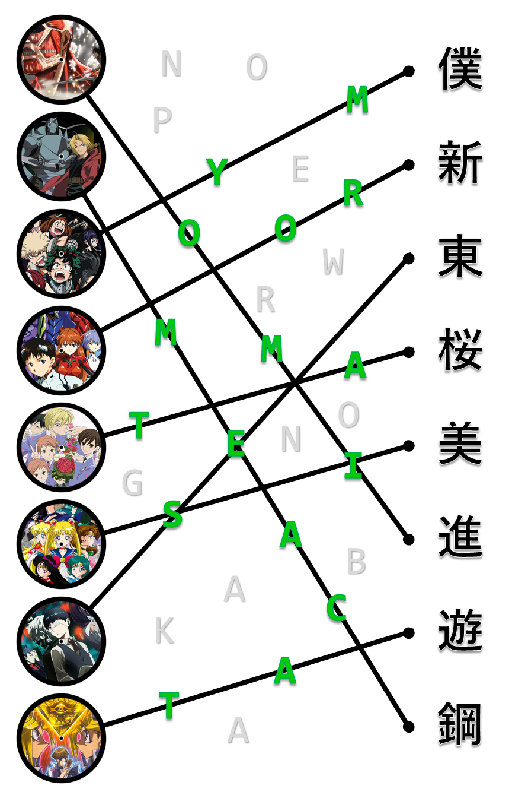
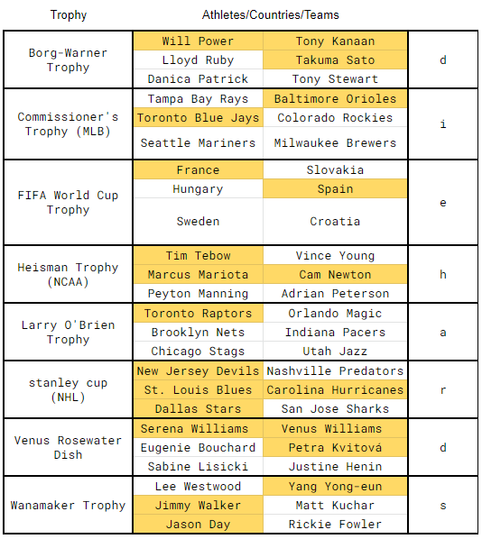
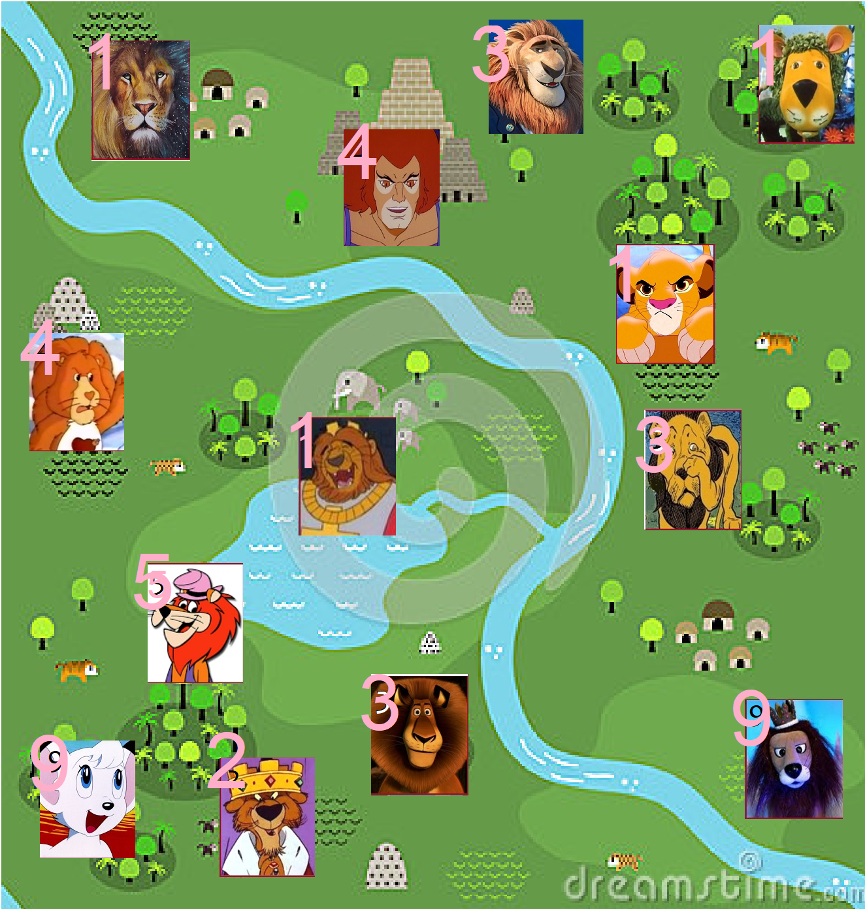

Solution: Severely Mangled Semantics
Answer: DROIDRAZR
Written by Ryan Thomas, with ideas from Dawson Do
In this puzzle, we see a text conversation about an on-going puzzle hunt with 5 mini-puzzles. These puzzles have no flavor text, and instead of a title each has 3 word blanks with unique numbers 1-17 underneath some blanks.
Even without explicit clues, the mini-puzzles each employ simple 1- or 2-layer mechanics and are easy to solve based on intuition.
Puzzle 1 (Anime)
On the left side of the puzzle, there are 8 popular anime sorted alphabetically by their English title. On the right, there are 8 kanji (sorted by their unicode value). Each kanji on the right relates to the first kanji of one of the Japanese titles of the anime.
Connect the anime and kanji with a line. The uncrossed letters give the phrase: NOPE WRONG BAKA, encouraging the solver to look at the crossed letters, which give: MY ROOMMATE IS A CAT, which is another anime!

Puzzle 2 (Inventions)
Here, 9 inventions are listed vertically in alphabetical order. There are two years on either side of each invention. The year the invention was first created is greater than the year on the left and less than the year on the right. If you fix the years to be correct, the difference between the given year and correct year are all between 1 and 26. Convert the differences to A1Z26 and read vertically to get: OPERATIONS RESEARCH
| Invention | Year Invented | Given Years 1 | Given Years 2 | Difference 1 | Difference 2 | Letter 1 | Letter 2 |
|---|---|---|---|---|---|---|---|
| barometer | 1643 | 1628 | 1662 | 15 | 19 | o | s |
| basketball | 1891 | 1875 | 1909 | 16 | 18 | p | r |
| bikini | 1946 | 1941 | 1951 | 5 | 5 | e | e |
| dynamite | 1867 | 1849 | 1886 | 18 | 19 | r | s |
| electromagnet | 1824 | 1823 | 1829 | 1 | 5 | a | e |
| lawn mower | 1830 | 1810 | 1831 | 20 | 1 | t | a |
| spam | 1937 | 1928 | 1955 | 9 | 18 | i | r |
| spork | 1874 | 1859 | 1877 | 15 | 3 | o | c |
| tuning fork | 1711 | 1697 | 1719 | 14 | 8 | n | h |
Puzzle 3 (Rihanna)
Here, we see 10 titles of songs by Rihanna with 2 numbers with each. Use the first number to index into the lyrics by word (e.g. 1 means first word, 2 means second word, etc.), and use the second number to index into the word. This gives the answer: LEADERSHIP
| Song | Word Index | Letter Index |
|---|---|---|
| Diamonds | like | l |
| Don't Stop the Music | please | e |
| Kiss It Better | baby | a |
| Love On The brain | and | d |
| Pon de Replay | come | e |
| Rude Boy | here | r |
| Russian Roulette | yourself | s |
| Stay | hot-headed | h |
| Where Have You Been | i've | i |
| Work | put | p |
Puzzle 4 (Cryptics)
Listed are 9 cryptic crossword clues, except the definitions of each have been inverted. Solving these variant cryptics then taking the first letter of each answer gives the phrase: SPIN CYCLE
| Given Definition | Word Play | Answer | First Letter |
|---|---|---|---|
| major | sub+ordinate | subordinate | s |
| conflict | "piece" | peace | p |
| well | i.* l.* l.* | ill | i |
| peak of | < drain > | nadir | n |
| excite | < clam > | calm | c |
| vocal disagrement | bucke[ye s]tate | yes | y |
| dull | cleaver-a | clever | c |
| enemies | < ole+vr > | lover | l |
| mundane | electronic picture => epic (pun) | epic | e |
Puzzle 5 (Trophies)
Here, 8 trophies and 2-by-3 grids. The trophies are listed in alphabetical order. If a cell contains an athlete/country/team that received the trophy they’re paired with, their cell is considered a raised dot in braille. Translating the grids to braille gives: DIE HARDS

Mini-Meta
First, each text from your lazy teammates can be represented by a 3-letter abbreviation often used in texts. The initials of each abbreviation can also be used to describe 3-word mechanics for the mini-puzzles. For example, the first text means “AFK,” which could also mean “anime first kanji.” The lengths of the words match the enumerations at the top of each puzzle.
We can use the numbers under the blanks to construct the phrase: EXPAND INITIALISMS
We might then realize the length of the texting meaning is the same length as their corresponding puzzle’s answers. Extracting the letters where the initials occur in the text meaning, we get the phrase: MOTOROLA’S SPYDER
The “Spyder” was the codename for Motorola’s smartphone: DROID RAZR our final answer.
| Initialism | Actual Meaning | Constructed Meaning | Feeder Answer | Extracted Letters |
|---|---|---|---|---|
| afk | Away From Keyboard | anime first kanji | myroommateisacat | mot |
| fyi | For Your Information | fix year invented | operationsresearch | oro |
| irl | In Real Life | index rihanna lyric | leadership | las |
| idc | I Dont Care | inverse definition cryptic | spincycle | spy |
| btw | By The Way | braille trophy winner | diehards | der |
Author’s Notes
This puzzle was originally drafted in April 2019. The original version simply clued backronyms (or backnitialisms, I suppose) and extracted letters from the last letter of each word. For example, “von Richthofen telling a sex joke” => “bawdy Red Baron” => “YDN.”
When rewriting the puzzle for this hunt, I decided to clue one backnitialism with a mini-puzzle named [redacted] with a dummy answer of “answer” (shown below). Dawson recommended making the entire puzzle a mini-meta, which resulted in a puzzle I’m really proud of. It took a lot of time write (and rewrite and re-set, etc.)—long enough, in fact, that I was able to watch the entirety of “My Roommate is a Cat.” I’d never heard of it before, but it was pretty good.

Dawson: Credit to user Mark Swardstrom who posted the basic CSS template for IOS messages on codepen